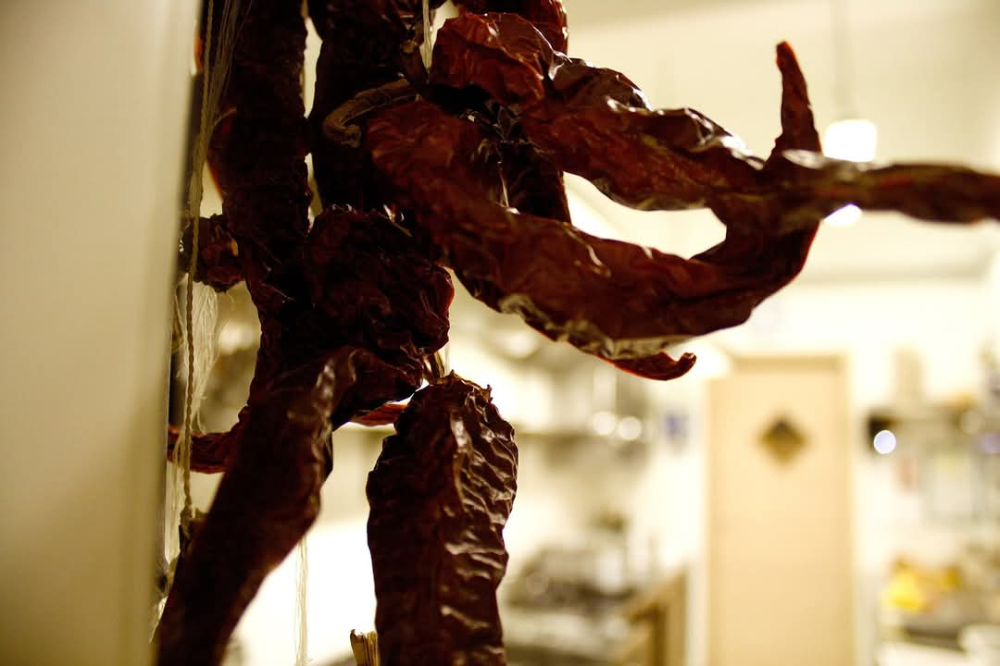
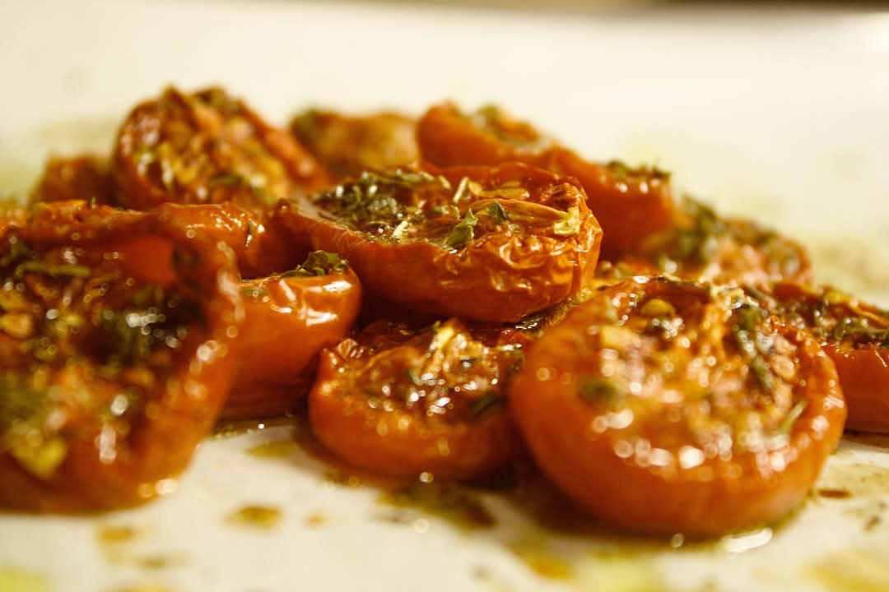
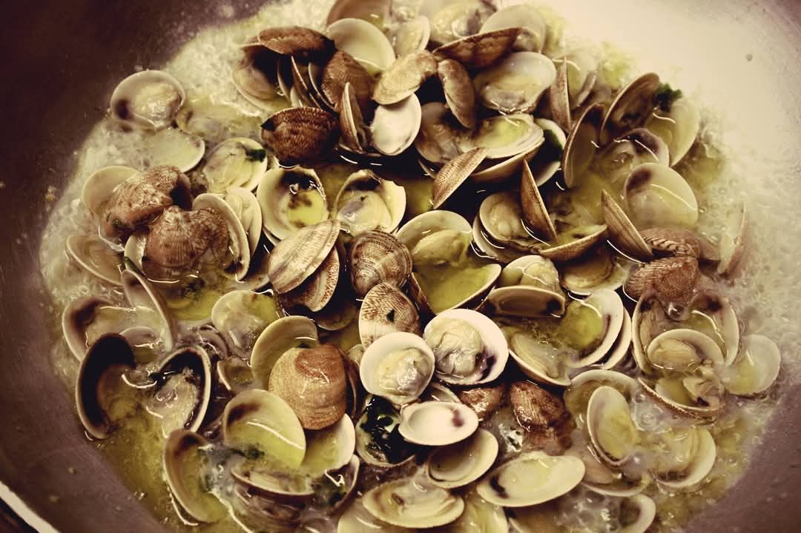
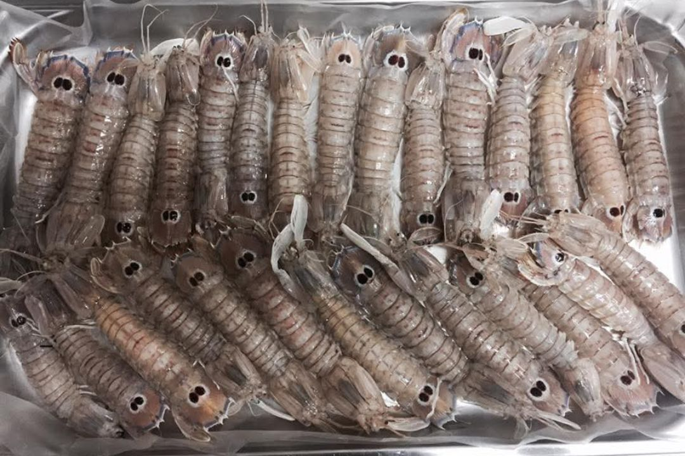
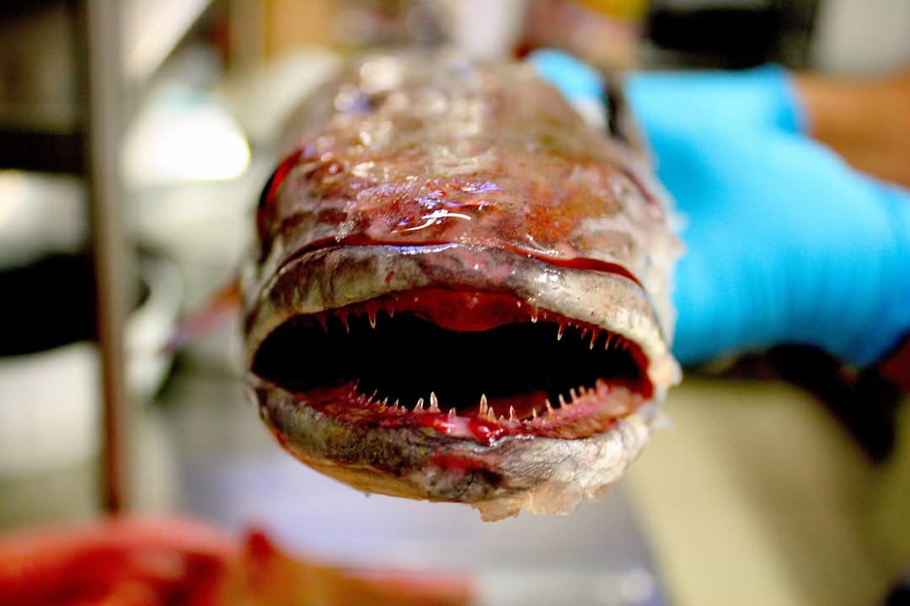
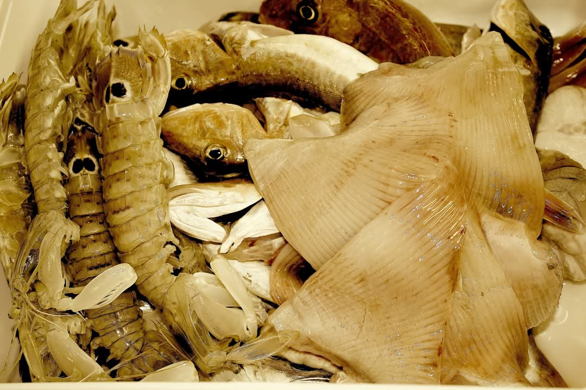

Chi Siamo
"Alla Trattoria Adriatica, raccontiamo la nostra passione attraverso la cucina. I nostri piatti celebrano la tradizione e l’innovazione con ingredienti freschi e di qualità."






La nostra filosofia
"Ogni piatto racconta la nostra passione: ingredienti freschi, tradizione e cura per ogni esigenza. Scopri cosa rende unica la nostra trattoria."